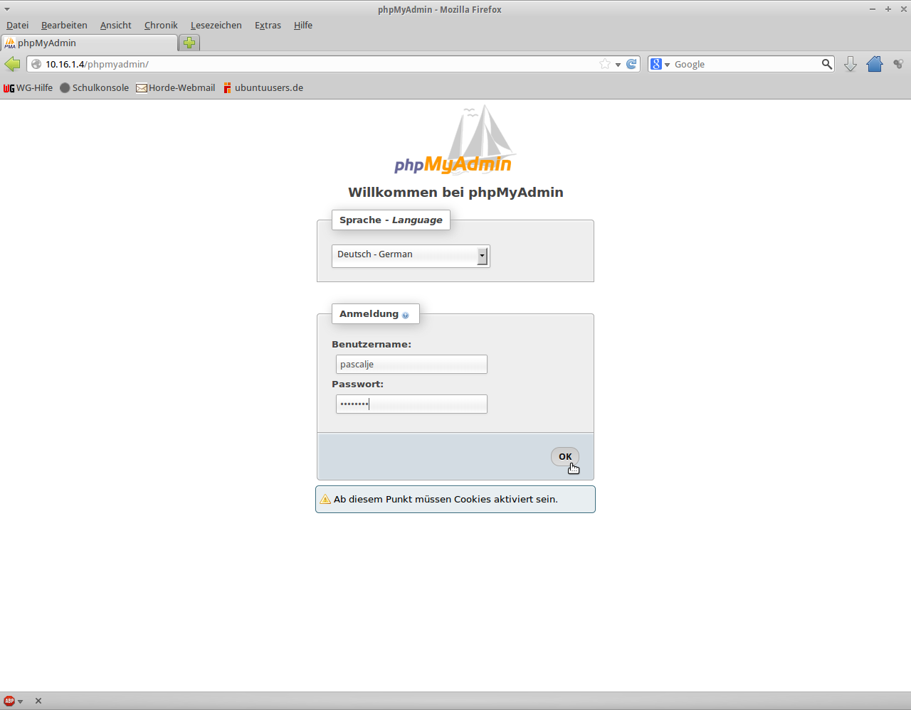
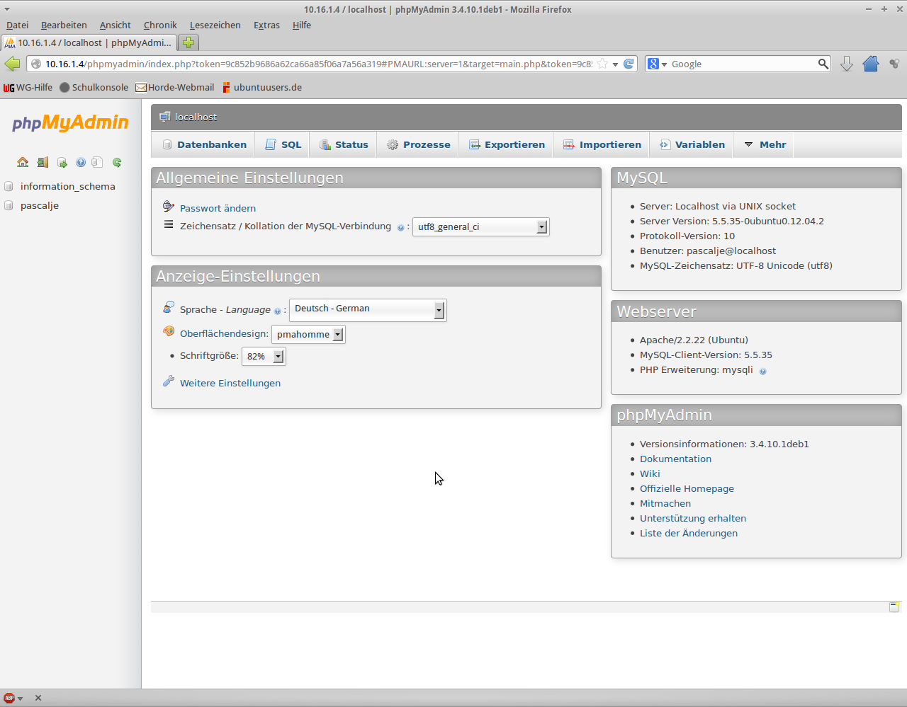

MySQL - PHPMyAdmin
Schritt 1. Öffne den Webbrowser.
Schritt 2. Öffne nun folgende URL -> http://10.16.1.4/phpmyadmin
Schritt 3. Gib nun deinen Benutzernamen von der Schule und das dazugehörige Passwort ein

Schritt 4. Bestätige deine Eingabe mit dem Ok-Knopf
Schritt 5. Nun bist du mit dem MySQL Server verbunden und kannst verschiedene MySQL-Statements verwenden
